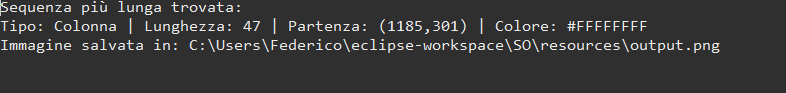
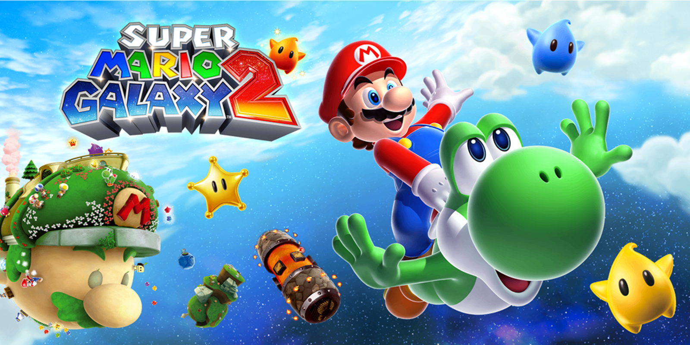
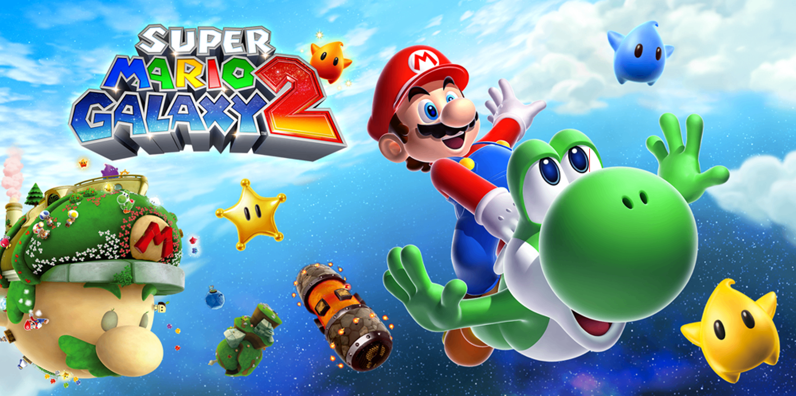

L'obiettivo era sviluppare un algoritmo efficiente in grado di scansionare un'immagine caricata dall'utente e individuare la più grande area contigua di pixel dello stesso colore. La complessità risiedeva nella gestione della memoria e nel tempo di esecuzione, risolta parallelizzando il lavoro tramite Thread e uno Scheduler dedicato.
Scarica il progetto completo per vedere la gestione dello scheduler:
Scarica ProgettoSnippet che mostra come vengono gestiti i task in parallelo:
/**
* Gestore dei Thread (Scheduler)
* Suddivide l'immagine in blocchi e assegna l'analisi a Worker paralleli
*/
class ImageAnalysisScheduler {
constructor(maxThreads = 4) {
this.workerPool = [];
this.maxThreads = maxThreads;
}
startAnalysis(imageData) {
// Worker separato per non bloccare la UI principale
const worker = new Worker('pixel-worker.js');
worker.postMessage({
pixels: imageData.data,
width: imageData.width,
height: imageData.height
});
worker.onmessage = (e) => {
const { maxSequence, color } = e.data;
console.log(`Sequenza trovata: ${maxSequence} pixel di colore ${color}`);
this.highlightResult(e.data.coordinates);
};
}
}
La logica BFS per trovare l'area contigua più grande:
/**
* Flood Fill — Breadth-First Search
* Trova l'area contigua più grande di pixel dello stesso colore
*/
function findLargestRegion(pixels, startX, startY, width) {
let queue = [[startX, startY]];
let count = 0;
const targetColor = getPixelColor(pixels, startX, startY);
let visited = new Set();
while (queue.length > 0) {
let [x, y] = queue.shift();
let key = `${x},${y}`;
if (x < 0 || x >= width || visited.has(key)) continue;
if (getPixelColor(pixels, x, y) !== targetColor) continue;
visited.add(key);
count++;
// Aggiungi i 4 vicini (N, S, E, W)
queue.push([x+1, y], [x-1, y], [x, y+1], [x, y-1]);
}
return count;
}


